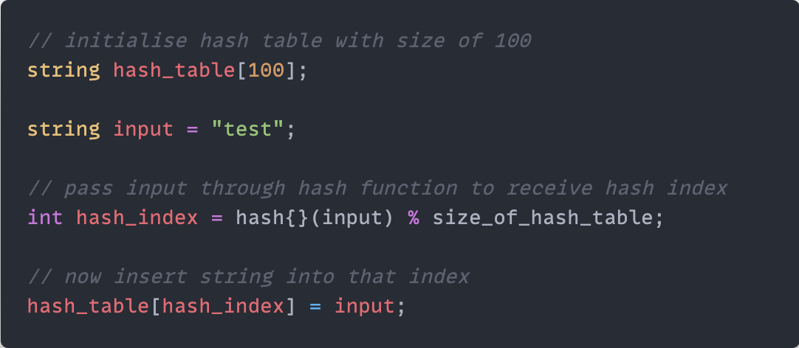

Just wrapped up my final spring sem CS project: a pared down adaptation of the unix grep program. It utilises hash tables to index all the files in a specified directory, and then allows users to perform searches for specific strings (i.e. words) within said directory.
Hash tables are data structures that allow for fast lookup of data, and the one that my partner and I chose to implement in our project utilises a simple array and the built-in C++ hash function. The hash function takes in a string and returns an integer, which represents that word's index in the array. So when a user goes to search for that same string, it returns the same index; when we access that index in the hash table, we get back the same word.
To make it work more like grep, we store not only the string but also other useful information in the hash table (using a struct), like its file name, line number, and the line itself. So when the user searches for a string, they will get back not only the word but also other info.
But what if there are collisions (i.e. two unique words, when passed into the hash function, return the same index)? Turns out we can handle those using one of two approaches: chaining, or linear probing. Chaining simply entails storing the two words in the same index using an array/linked list, while linear probing entails searching for the next available/empty spot in the array.
Of course, many of the nitty-gritty implementation details are left out, but for a quick general overview of how hash tables work, I think this will do (for now).
⚛︎ return to notes ⁖ return to main